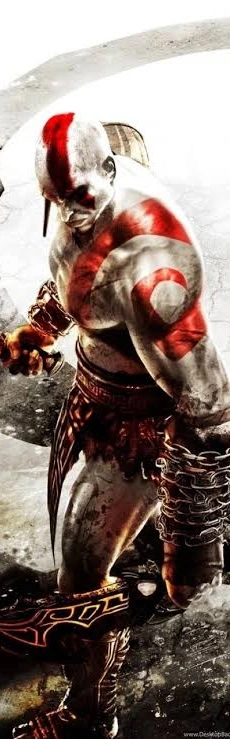

Ocarina of Time is reborn
Nintendo's Switch 2 remake lands as the best-reviewed game of 2026. Plus a new president at Pixar, a Stranger Things prequel, U2 in Barcelona and Sanderson's first steps towards Stormlight 6.
Contents

The week in a minute
Hyrule is back in 3D: Nintendo's Ocarina of Time remake arrived on Switch 2 with a Metacritic score of 96, the highest of the year. Pixar named Jonathan Garson as its next president, Netflix confirmed a Stranger Things prequel set in 1955, U2 booked two nights at Barcelona's Olympic Stadium and Brandon Sanderson started planning the sixth Stormlight book.
Don't miss
- Zelda: Ocarina of Time launches on Switch 2 as 2026's best-reviewed game. p. 08
- Other Worlds: A Stranger Things Adventure is official for 2028. p. 05
- U2 play Barcelona on 13 and 15 May 2027; general sale opens 13 November. p. 07


Next week
Football Manager 27 kicks off on 10 November, Metaphor: ReFantazio and Pikmin 4 reach Switch 2 on the 12th, and U2 presales run from the 9th ahead of the general sale on the 13th, when How to Rob a Bank and Ebenezer open in Spanish cinemas.
Full dates are on the back page.
Every story here is summarised in our own words from outlets such as Cartoon Brew, Animation Magazine, Variety, Espinof, NME, VGC, Gematsu and The Bookseller, and each one names its source.
Animation
Pixar names a new president
General manager Jonathan Garson will succeed Jim Morris, who has led Pixar since 2014, with the changes taking effect on 4 January 2027. Morris becomes president emeritus and stays on as executive producer of Incredibles 3, while Jonas Rivera, the Oscar-winning producer of Inside Out and Toy Story 4, moves into a full-time creative role beside Pete Docter.
Garson has spent more than 30 years at Disney and ran Pixar's marketing and franchise team. He takes over a studio that has cut staff twice and now caps each film's crew time. Next up are Gatto (5 March 2027), Ghost Market (10 March 2028) and Incredibles 3 (June 2028).
Via Cartoon Brew

Bocchi the Rock! goes back in time
Hoshi no Ashiato ("Starry Footprints") is a prequel film about the younger Ijichi sisters, Nijika and Seika, due in 2027. Shin Wakabayashi directs at CloverWorks, and Sayumi Suzushiro and Maaya Uchida return. Season two of the TV series is still in production with no date.
Via Anime Corner · Anime TrendingBlue Eye Samurai sails to London
Season two streams from 19 January, with Mizu hunting the last two men who could be her father in London while Akemi and Taigen serve a dangerous new shogun. Blue Spirit animates again, Maya Erskine leads, and Jonathan Pryce joins the cast.
Via Cartoon Brew
Series
Stranger Things goes back to 1955
Netflix has confirmed Other Worlds: A Stranger Things Adventure with a first teaser. The prequel is set in Marion, Nevada, and the Duffer Brothers have said it leads to Henry Creel becoming Vecna. Kate Trefry, who wrote the stage play The First Shadow, is showrunner and Joe Wright directs the first three episodes. It premieres in 2028; casting comes next.
Via Espinof
Nobody Wants This gets a fourth season
The renewal came two weeks after season three opened on 22 October with 13.4 million views. Kristen Bell and Adam Brody return.
Via Variety · TheWrap
The Pitt heads to trial over ER
Michael Crichton's widow claims the hospital drama copies ER, and the case now goes to trial in Los Angeles. HBO's side denies any copying.
Via Espinof
Off Campus sets its return
Season two adapts Elle Kennedy's The Score and shifts to Dean and Allie, played by Stephen Kalyn and Mika Abdalla.
Via TVLineFilm
A documentary wins a quiet Halloween
You Can See Everything, Nathan Fielder and Lance Oppenheim's documentary about Elizabeth Holmes, reached No. 1 in its third weekend with an estimated $10.6 million, just $200,684 ahead of DC's Clayface ($10.4 million, down 57%). LAIKA's Wildwood was third with $7.5 million, ahead of Wicker and Street Fighter.
The bigger picture
The documentary has now taken $63.9 million on a reported $7 million budget. With Halloween keeping audiences at home on Saturday, the whole weekend came in under $56 million, the second-lowest of the year, although the domestic total for 2026 is still up more than 17%.
Via AP · The Numbers

Cinemark says no to Cliff Booth
Netflix's first Imax release, the Once Upon a Time in Hollywood follow-up with Brad Pitt, gets a two-week run before streaming on 25 December. Cinemark and Regal declined, so only AMC will show it; Cinemark's CEO said the short window does not help cinemas.
Via TheWrap
Elsinore leads with 12 nominations
Simon Stone's film, with Andrew Scott as actor Ian Charleson preparing Hamlet, tops the British Independent Film Awards list, ahead of Clio Barnard's I See Buildings Fall Like Lightning with eight. Winners are revealed on 6 December at London's Roundhouse.
Via Irish Examiner · BFIMusic
U2 book two nights at the Olympic Stadium
The band's 2027 stadium tour for the album Carnaval de luz stops twice at Barcelona's Estadi Olímpic Lluís Companys, with a third Spanish date at La Cartuja in Seville on 22 May. The European leg opens in Stockholm on 26 April with Wolf Alice as guests.
Fan presales start on 9 November, followed by Visa (11 November) and Live Nation (12 November). General sale opens on 13 November through U2.com, Livenation.es and Ticketmaster; prices have not been announced.
Via Time Out Barcelona
RADWIMPS go abstract for "Shabadaba"
The video for the theme of Fuji TV drama Political Pan, directed by Masaki Watanabe, follows two October songs for the film You, Like a Star.
Via Skream!
The Black Parade finally hits No. 1
The 20th-anniversary edition topped the Billboard 200 with 78,000 units, the longest wait ever for an album to reach the top.
Via AP
Spain's screen-music prizes
At the 9th Musimagen Awards, Juan Barro won best video game score for Luto and Alfonso de Vilallonga best film score for Tres adioses.
Via SoundTrackFestVideo games
Out now · Switch 2Ocarina of Time, rebuilt
Nintendo's remake came out on 5 November and debuted on Metacritic at 96 from 81 reviews, the best of 2026. HokWai Ng, who worked on Tears of the Kingdom, directs, with Eiji Aonuma producing.
Link can now jump and dash, aim the bow with gyro controls and swap masks from the D-pad. Castle Town is fully 3D, dialogue is voiced and the Water Temple is less of a maze. VGC gave it 5/5.
Via VGC · Nintendo Life · Nintendo WireAlso this week
Evercold slips to 23 February
The expansion moves from January, with early access on 19 February. Fan Festival Tokyo revealed Zephyr, a crossbow job with a bird familiar.
Via Gematsu
Pokopia's second expansion on 9 December
Dazzling Decorations brings outfits and new towns; a third expansion is planned for 2027.
Via VGCA countdown to 30 November
The Pokémon Company's posts count down in hours to a reveal nobody has explained yet.
Via Nintendo LifeThe 40th anniversary runs into 2027
Nintendo's president promised more plans; the live-action film opens on 30 April 2027.
Via Nintendo WireBooks
Stormlight 6 starts to take shape
In his weekly video update, Sanderson said he is beginning to think about the sixth Stormlight Archive book. He plans to outline books six to ten during 2027 so he can start drafting in January 2028, after the Mistborn Era Three trilogy.
He gave no release date. For scale, he started Wind and Truth in January 2022 and it came out in December 2024. Apple TV holds the Cosmere rights, and he wants to stay ahead of the planned Stormlight series.
Via CBR · Screen Rant

Mistborn wants one star
Sanderson told fans that Apple wants a well-known actor only for Kelsier, with newcomers as Vin and Elend. He finished the first draft of the film script in July and is now on a second. There are no release dates yet.
Via MovieWebDunk and Egg finish season two
A Knight of the Seven Kingdoms has wrapped its second season, which is expected in 2027 without an exact date. HBO has not renewed it for a third yet, though the showrunner has mapped one season per novella.
Via Collider
More news
The rest of the week in one line each.
Coming up
Football Manager 27PC, PS5, Xbox Series · Games
Warhammer SurvivorsPC, PS5, Xbox Series, Switch, Switch 2 · Games
Metaphor: ReFantazioSwitch 2 · Games
Pikmin 4 – Switch 2 Edition + Dandori AcademySwitch 2 · Games
Sonic Pico ParkPC, PS5, Xbox Series, Switch, Switch 2 · Games
How to Rob a Bank (Cómo robar un banco)Cinemas in Spain · Film
Ebenezer (Scrooge y los fantasmas de la Navidad)Cinemas in Spain · Film
The Rivals of Amziah KingCinemas in Spain · Film
The Violinist (La violinista)Cinemas in Spain · Animation
Release dates in Spain, 7–15 November. No new anime premieres in Spain this week. Every story in Hobby Fiction is a summary written for this issue, with its sources credited.